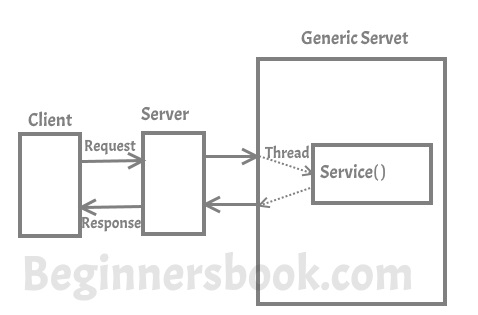
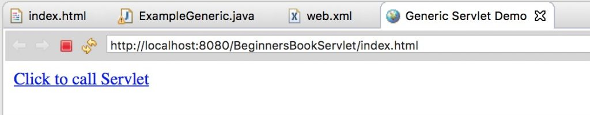
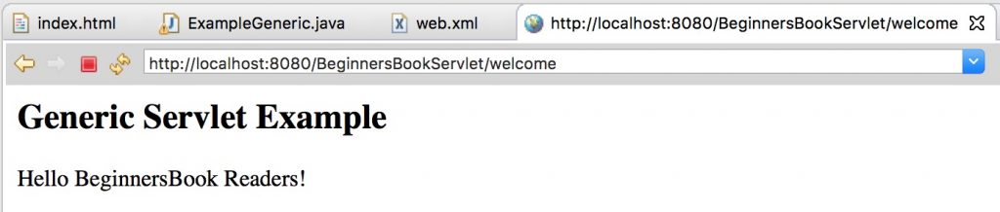

While discussing Servlet API, I have discussed little bit about Generic Servlet. In this article, I will discuss Generic Servlet in detail.
A generic servlet is a protocol independent Servlet that should always override the service() method to handle the client request. The service() method accepts two arguments ServletRequest object and ServletResponse object. The request object tells the servlet about the request made by client while the response object is used to return a response back to the client.
How Generic Servlet works?

Hierarchy of Generic Servlet
java.lang.Object |_extended byjavax.servlet.GenericServlet
GenericServlet is an abstract class and it has only one abstract method, which is service(). That’s why when we create Generic Servlet by extending GenericServlet class, we must override service() method.
Pros of using Generic Servlet:
1. Generic Servlet is easier to write
2. Has simple lifecycle methods
3. To write Generic Servlet you just need to extend javax.servlet.GenericServlet and override the service() method (check the example below).
Cons of using Generic Servlet:
Working with Generic Servlet is not that easy because we don’t have convenience methods such as doGet(), doPost(), doHead() etc in Generic Servlet that we can use in Http Servlet.
In Http Servlet we need to override particular convenience method for particular request, for example if you need to get information then override doGet(), if you want to send information to server override doPost(). However in Generic Servlet we only override service() method for each type of request which is cumbersome.
I would always recommend you to use HttpServlet instead of the GenericServlet. HttpServlet is easier to work with, and has more methods to work with than GenericServlet.
Example of GenericServlet
I am using Eclipse IDE for this example. Create New “Dynamic Web Project” from the Eclipse file menu.
I have explained each and every step for creating Servlet in Eclipse IDE, however if you new to Eclipse and don’t have it installed on your System then refer this guide: How to install Eclipse, setup Tomcat and run your first servlet program using Eclipse IDE.
Project structure (or you can hierarchy) would look like this, once you are done creating all the following files in IDE.

index.html
We are creating an html file that would call the servlet once we click on the link on web page. Create this file in WebContent folder. This path of the file should look like this: WebContent/index.html
<!DOCTYPE html> <html> <head> <meta charset="UTF-8"> <title>Generic Servlet Demo</title> </head> <body> <a href="welcome">Click to call Servlet</a> </body> </html>
ExampleGeneric.java
Now, we are creating a Generic Servlet by extending GenericServlet class. When creating a GenericServlet you should always override service() method. Right click on the src folder and create a new class file, name the file as ExampleGeneric. The file path should look like this: Java Resouces/src/default package/ExampleGeneric.java
import java.io.*;
import javax.servlet.*;
public class ExampleGeneric extends GenericServlet{
public void service(ServletRequest req,ServletResponse res)
throws IOException,ServletException{
res.setContentType("text/html");
PrintWriter pwriter=res.getWriter();
pwriter.print("<html>");
pwriter.print("<body>");
pwriter.print("<h2>Generic Servlet Example</h2>");
pwriter.print("<p>Hello BeginnersBook Readers!</p>");
pwriter.print("</body>");
pwriter.print("</html>");
}
}
web.xml
This file can be found at this path WebContent/WEB-INF/web.xml. In this file we will map the Servlet with the specific URL. Since we are calling welcome page upon clicking the link on index.html page so we are mapping the welcome page to the Servlet class we created above.
<web-app> <display-name>BeginnersBookServlet</display-name> <welcome-file-list> <welcome-file>index.html</welcome-file> <welcome-file>index.htm</welcome-file> <welcome-file>index.jsp</welcome-file> <welcome-file>default.html</welcome-file> <welcome-file>default.htm</welcome-file> <welcome-file>default.jsp</welcome-file> </welcome-file-list> <servlet> <servlet-name>MyGenericServlet</servlet-name> <servlet-class>ExampleGeneric</servlet-class> </servlet> <servlet-mapping> <servlet-name>MyGenericServlet</servlet-name> <url-pattern>/welcome</url-pattern> </servlet-mapping> </web-app>
Output:

Screen after you click the link in first screen:

Methods of GenericServlet class:
Here is the list of all the methods of GenericServlet class.
1. public void init(): it is a convenient method. This method can be overridden so that there’s no need to call super.init(config).
2. public void init(ServletConfig config): Called by the servlet container to indicate that the servlet is being placed into service, this method is used for initializing the servlet.
3. public String getInitParameter(String name): Returns a String containing the value of the given initialization parameter, or null if the parameter does not exist.
4. public Enumeration getInitParameterNames(): Returns the names of all the parameters defined in the web.xml file or null if web.xml does’t have any parameter.
5. public abstract void service(ServletRequest request, ServletResponse response): Called by the Servlet container to allow servlet to respond to the requests made by client.
6. public void destroy(): It is called by servlet container once at the end of servlet life cycle to indicate that servlet is being destroyed.
7. public ServletConfig getServletConfig(): Return the ServletConfig object that initialized this servlet
8. public String getServletInfo(): Returns information about servlet.
9. public ServletContext getServletContext(): Return ServletContext object, passed to this servlet by the init method
10. public String getServletName(): Returns the name of the servlet instance.
11. public void log(String msg): Writes the given message in the servlet log file.
12. public void log(String msg,Throwable t): Writes the explanatory message in the servlet log file including a String that describes the error or exception.
Leave a Reply